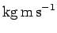
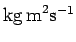
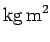
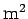

| Geschwindigkeit | m/s | Beschleunigung | m/s2 |
| Winkelgeschwindigkeit | Winkelbeschleunigung | ||
| Impuls |  | Drehimpuls |  |
| Drehmoment | Trägheitsmoment |  | |
| Wirkung | Energie | ||
| Fläche |  | Volumen | |
| Dichte | kg/m3 | Teilchenzahldichte | m-3 |
| Elektrische Feldstärke | V/m | Magnetische Feldstärke | |
| Wärmekapazität | J/K | Spezifische Wärmekapazität | J/(Kkg) |
| Entropie | J/K | Enthalpie | J |